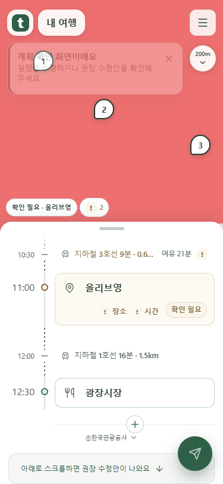
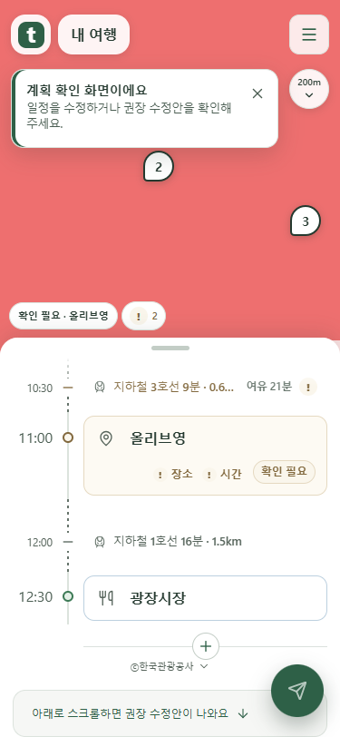
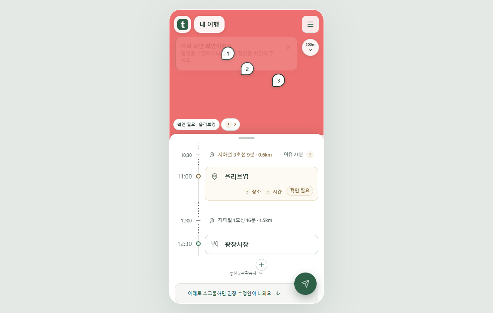
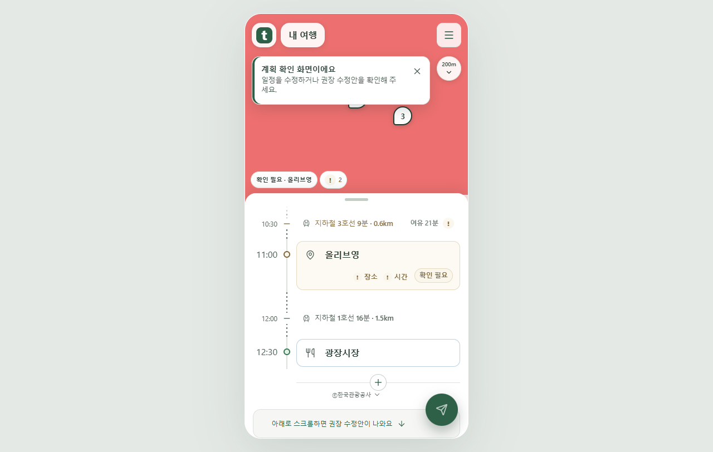

목록을 끝까지 내리면 제출 버튼 표시
맨 아래에서는 스크롤 중에도 제출 버튼을 바로 표시합니다. 위로 올라가면 기존처럼 스크롤 중 숨고, 멈추면 돌아옵니다. 스크롤만으로 일정이 제출되지는 않습니다.
실제 Chrome · mock 서버 촬영입니다. 공개 서비스 반영 전 로컬 검증 결과입니다.
375px 휴대폰




1280px PC




맨 아래에서는 스크롤 중에도 제출 버튼을 바로 표시합니다. 위로 올라가면 기존처럼 스크롤 중 숨고, 멈추면 돌아옵니다. 스크롤만으로 일정이 제출되지는 않습니다.
실제 Chrome · mock 서버 촬영입니다. 공개 서비스 반영 전 로컬 검증 결과입니다.



